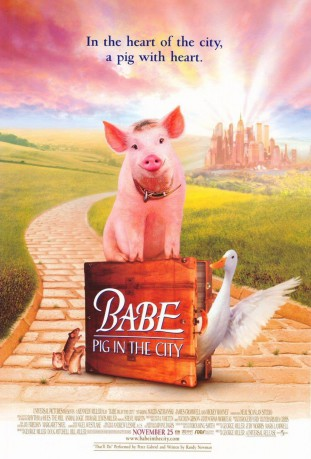

#10403 Schweinchen Babe in der großen Stadt
Auszeichnungen: für 1 Oscars nominiert
 
 IMDB-Wertung: 5.8 / 10
IMDB-Wertung: 5.8 / 10  Metascore: 68
Metascore: 68 
After Babe's great victory in the shepherding contest, Farmer Arthur Hoggett turns down all offers to make money with his pig's talents. But when he gets hurt severely in the well, his wife has to take up farming. She does her best but cannot meet the bank's requirements, which results in the necessity of getting back to Babe. Soon, Esme Hoggett is sitting in a plane headed for "the" city. There, Babe unwillingly causes deep trouble. He has to stay with Mrs. Hoggett in the only hotel in town that accepts pets. Friendly neighbours send officials who catch all animals from the hotel: Cats, dogs, chimpanzees and many others. Babe, who managed to stay free, decides to help his new friends and gets unexpected help - not only by Ferdinand, who flew all the way to the city.
Jahr: 1998
Dauer: 95 Minuten
FSK: 6
Land: Australien Studio: UIPTonspuren:
Untertitel: Deutsch,
Auflösung: 1080p (1920x1040) Größe: 4075 MB
Genre: Drama, Komödie, Abenteuer, Fantasy, Familie
Regisseur: George Miller
Drehbuch: George Miller, Judy Morris, Mark Lamprell, Dick King-Smith
Soundtrack: Nigel Westlake
Darsteller:
 Magda Szubanski als Mrs. Esme Cordelia Hoggett
Magda Szubanski als Mrs. Esme Cordelia Hoggett James Cromwell als Farmer Arthur Hoggett
James Cromwell als Farmer Arthur Hoggett- Mary Stein als The Landlady
 Mickey Rooney als Fugly Floom
Mickey Rooney als Fugly Floom Elizabeth Daily als Babe
Elizabeth Daily als Babe Glenne Headly als Zootie
Glenne Headly als Zootie Steven Wright als Bob
Steven Wright als Bob James Cosmo als Thelonius
James Cosmo als Thelonius- Nathan Kress als Easy / Tough Pup
- Myles Jeffrey als Easy
- Stanley Ralph Ross als The Bull Terrier / The Doberman
 Russi Taylor als The Pink Poodle / Choir Cat
Russi Taylor als The Pink Poodle / Choir Cat Adam Goldberg als Flealick
Adam Goldberg als Flealick- Eddie Barth als Nigel / Alan
 Miriam Margolyes als Fly
Miriam Margolyes als Fly Hugo Weaving als Rex
Hugo Weaving als Rex Roscoe Lee Browne als The Narrator
Roscoe Lee Browne als The Narrator- Paul Livingston als Hot Headed Chef
- Kim Story als Judge
 Richard Carter als Detective
Richard Carter als Detective- Janet Foye als Mrs. Hoggett's Friend
- Terrell Dixon als Customs Guard
- Gabby Millgate als Female Officer
 Anthony Phelan als Security Guard
Anthony Phelan als Security Guard Van Epperson als Night Cleaner
Van Epperson als Night Cleaner- John Samaha als Van Cop
- Jennifer Kent als Lab Lady
- Richard Huggett als Cop
 Felix Williamson als Raider
Felix Williamson als Raider John Walton als Padded Raider
John Walton als Padded Raider- Gandhi MacIntyre als Lab Technician
- Peter Callan als Hospital Doctor
 Katie Leigh als Kitten
Katie Leigh als Kitten- Evelyn Krape als Old Ewe / Alley Cats
- Charles Bartlett als Cow
 Al Mancini als Fish
Al Mancini als Fish- Larry Moss als Fish
 Jim Cummings als Pelican
Jim Cummings als Pelican- Pippa Grandison als Additional Voices
- J.D. Hall als Additional Voices
- Wendy Hammers als Additional Voices
 Scotty Leavenworth als Additional Voices
Scotty Leavenworth als Additional Voices- Carly Schroeder als Additional Voices
 Roger Rose als Additional Voices
Roger Rose als Additional Voices- Joseph R. Sicari als Additional Voices
 Naomi Watts als Additional Voices
Naomi Watts als Additional Voices- Cass Cumerford als Banquet Guest (uncredited)
- Randy Newman als The Balladeer's Pianist (uncredited)
- Danny Mann als Ferdinand / Tug
- Bill Capizzi als Snoop, The Sniffer Dog
Datei: X:\2-Dilogie(N-Z)\Schweinchen Babe\Schweinchen Babe in der großen Stadt (1998, FSK6, 1920x1040).mkv seit 04.01.2019
Festplatte: HD Collection-2(A-Z)-3(A-M)
 Alle Filme aus Gruppe '2-Dilogie(N-Z)\Schweinchen Babe'
Alle Filme aus Gruppe '2-Dilogie(N-Z)\Schweinchen Babe'